This is the course note of Machine Learning from Andrew Ng from Coursera
Reference From Coursera Course Machine Learning. I am also really sorry that I did not write down some sources when I cite from the web. I was too young and did not get any academic training when I wrote these notes.
Let me thank Ng first. This course Changed me. I still remember that afternoon when I was just a sophomore. I discovered the Machine Learning course lectured by Andrew Ng on Coursera and was fascinated by the underlying algorithms. It was amazing to see that a simple yet elegant mathematical model could make predictions on new data after being trained with large amounts of training sets for analysis and fitting. I spent several days on the assignments and developed a classifier to filter spam emails and an Optical Character Recognition program. Never expecting that I could program the machine to gain the cognitive ability, I was so thrilled and resolved to advance my knowledge in this area. About two years later, I took this course again and reviewed some important concepts to prapare the interviews. I wrote down notes and paid for the course this time
This is my course certificate. I really want all of guys who want to dive into the area of machine learning to take this course on Coursera.
certificate
What is Machine Learning?
Two definitions of Machine Learning are offered. + Arthur Samuel described it as: "the field of study that gives computers the ability to learn without being explicitly programmed." This is an older, informal definition.
Tom Mitchell provides a more modern definition: "A computer program is said to learn from experience E with respect to some class of tasks T and performance measure P, if its performance at tasks in T, as measured by P, improves with experience E."
Example: playing checkers.
E = the experience of playing many games of checkers
T = the task of playing checkers.
P = the probability that the program will win the next game.
In general, any machine learning problem can be assigned to one of two broad classifications:
Supervised learning and Unsupervised learning.
Supervised Learning
In supervised learning, we are given a data set and already know what our correct output should look like, having the idea that there is a relationship between the input and the output.
Supervised learning problems are categorized into "regression" and "classification" problems. In a regression problem, we are trying to predict results within a continuous output, meaning that we are trying to map input variables to some continuous function. In a classification problem, we are instead trying to predict results in a discrete output. In other words, we are trying to map input variables into discrete categories.
Example 1:
Given data about the size of houses on the real estate market, try to predict their price. Price as a function of size is a continuous output, so this is a regression problem.
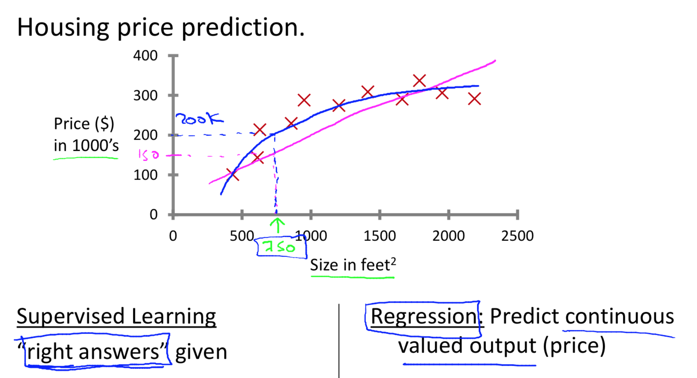Screen Shot 2018-03-02 at 15.22.36.png
We could turn this example into a classification problem by instead making our output about whether the house "sells for more or less than the asking price." Here we are classifying the houses based on price into two discrete categories.
Example 2:
Regression - Given a picture of a person, we have to predict their age on the basis of the given picture
Classification - Given a patient with a tumor, we have to predict whether the tumor is malignant or benign.
Screen Shot 2018-03-02 at 15.22.51.png
Unsupervised Learning
Unsupervised learning allows us to approach problems with little or no idea what our results should look like. We can derive structure from data where we don't necessarily know the effect of the variables.
We can derive this structure by clustering the data based on relationships among the variables in the data.
With unsupervised learning there is no feedback based on the prediction results.
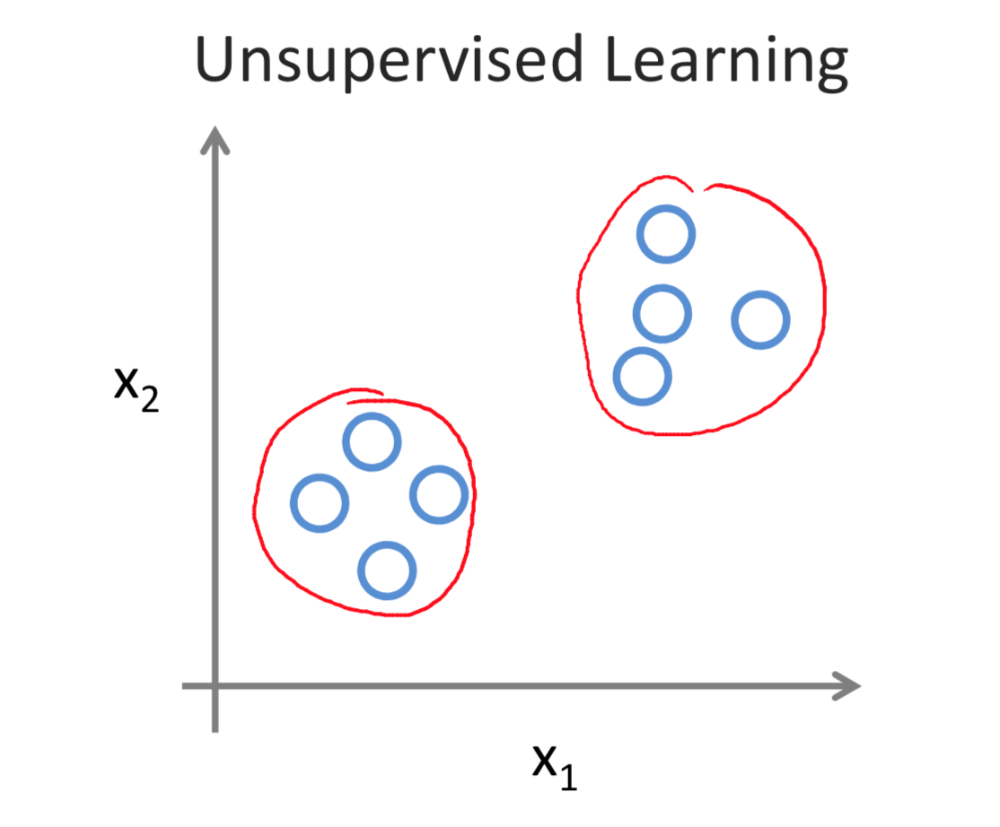Screen Shot 2018-03-02 at 15.26.13.png
Example:
Clustering: Take a collection of 1,000,000 different genes, and find a way to automatically group these genes into groups that are somehow similar or related by different variables, such as lifespan, location, roles, and so on.
Model Representation
To establish notation for future use, we’ll use x(i) to denote the “input” variables (living area in this example), also called input features, and y(i) to denote the “output” or target variable that we are trying to predict (price). A pair (x(i),y(i)) is called a training example, and the dataset that we’ll be using to learn—a list of m training examples (x(i),y(i));i=1,...,m—is called a training set. Note that the superscript “(i)” in the notation is simply an index into the training set, and has nothing to do with exponentiation. We will also use X to denote the space of input values, and Y to denote the space of output values. In this example, X = Y = ℝ.
To describe the supervised learning problem slightly more formally, our goal is, given a training set, to learn a function h : X → Y so that h(x) is a “good” predictor for the corresponding value of y. For historical reasons, this function h is called a hypothesis. Seen pictorially, the process is therefore like this:
Screen Shot 2018-03-02 at 16.13.42.png
When the target variable that we’re trying to predict is continuous, such as in our housing example, we call the learning problem a regression problem. When y can take on only a small number of discrete values (such as if, given the living area, we wanted to predict if a dwelling is a house or an apartment, say), we call it a classification problem.
Linear Regression with Multiple Variables
Cost Function
We can measure the accuracy of our hypothesis function by using a cost function. This takes an average difference (actually a fancier version of an average) of all the results of the hypothesis with inputs from x's and the actual output y's. \[J(θ_0,θ_1)=\frac{1}{2m}\sum_{i=1}^m(\hat{y}_i−y_i)^2=\frac{1}{2m}\sum_{i=1}^m(h_θ(x_i)−y_i)^2\]
To break it apart, it is \(\frac{1}{2}\bar{x}\) where \(\bar{x}\) is the mean of the squares of \(h_θ(x_i)−y_i\) , or the difference between the predicted value and the actual value.
This function is otherwise called the "Squared error function", or "Mean squared error". The mean is halved (\(\frac{1}{2}\)) as a convenience for the computation of the gradient descent, as the derivative term of the square function will cancel out the \(\frac{1}{2}\) term. The following image summarizes what the cost function does:
Cost Function - Intuition I
If we try to think of it in visual terms, our training data set is scattered on the x-y plane. We are trying to make a straight line (defined by \(h_θ(x)\)) which passes through these scattered data points.
Our objective is to get the best possible line. The best possible line will be such so that the average squared vertical distances of the scattered points from the line will be the least. Ideally, the line should pass through all the points of our training data set. In such a case, the value of \(J(θ_0,θ_1)\) will be 0. The following example shows the ideal situation where we have a cost function of 0.
Screen Shot 2018-03-02 at 17.18.45.png
When \(θ_1=1\), we get a slope of 1 which goes through every single data point in our model. Conversely, when θ1=0.5, we see the vertical distance from our fit to the data points increase.
Screen Shot 2018-03-02 at 17.19.16.png
This increases our cost function to 0.58. Plotting several other points yields to the following graph:
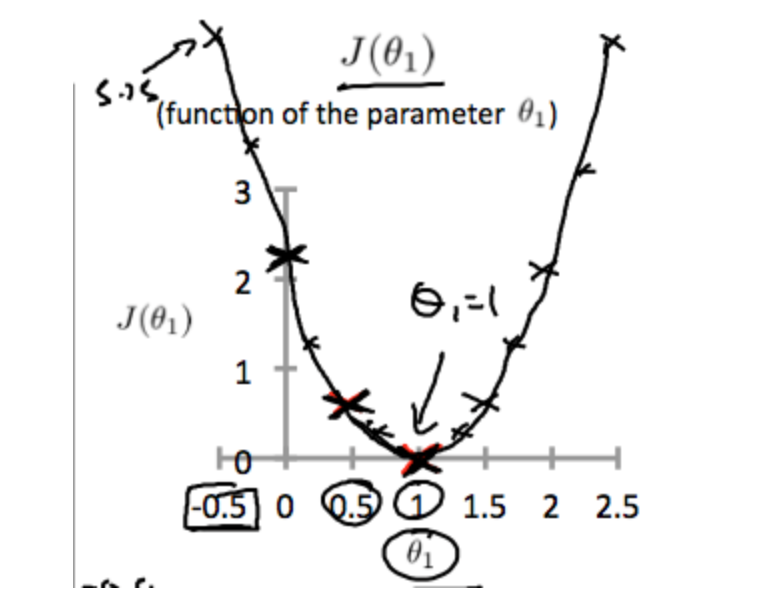Screen Shot 2018-03-02 at 17.19.50.png
Thus as a goal, we should try to minimize the cost function. In this case, \(θ_1=1\) is our global minimum.
Cost Function - Intuition II
A contour plot is a graph that contains many contour lines. A contour line of a two variable function has a constant value at all points of the same line. An example of such a graph is the one to the right below.
Taking any color and going along the 'circle', one would expect to get the same value of the cost function. For example, the three green points found on the green line above have the same value for \(J(θ_0,θ_1)\) and as a result, they are found along the same line. The circled x displays the value of the cost function for the graph on the left when \(θ_0 = 800\) and \(θ_1= -0.15\). Taking another h(x) and plotting its contour plot, one gets the following graphs: 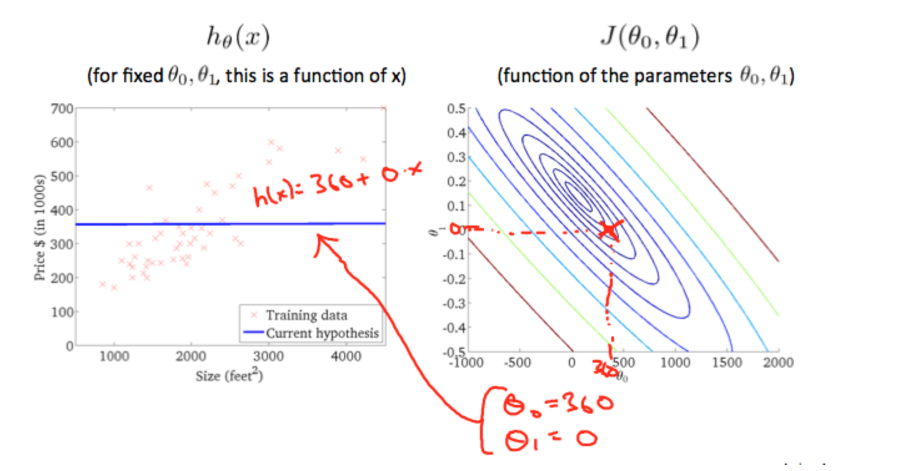
When \(θ_0 = 360\) and \(θ_1 = 0\), the value of \(J(θ_0,θ_1)\) in the contour plot gets closer to the center thus reducing the cost function error. Now giving our hypothesis function a slightly positive slope results in a better fit of the data.
Screen Shot 2018-03-02 at 17.42.31.png
The graph above minimizes the cost function as much as possible and consequently, the result of \(θ_1\) and \(θ_0\) tend to be around 0.12 and 250 respectively. Plotting those values on our graph to the right seems to put our point in the center of the inner most 'circle'.
Gradient Descent
So we have our hypothesis function and we have a way of measuring how well it fits into the data. Now we need to estimate the parameters in the hypothesis function. That's where gradient descent comes in.
Imagine that we graph our hypothesis function based on its fields \(θ_0\) and \(θ_1\) (actually we are graphing the cost function as a function of the parameter estimates). We are not graphing x and y itself, but the parameter range of our hypothesis function and the cost resulting from selecting a particular set of parameters.
We put \(θ_0\) on the x axis and \(θ_1\) on the y axis, with the cost function on the vertical z axis. The points on our graph will be the result of the cost function using our hypothesis with those specific theta parameters. The graph below depicts such a setup.
Screen Shot 2018-03-02 at 17.46.49.png
We will know that we have succeeded when our cost function is at the very bottom of the pits in our graph, i.e. when its value is the minimum. The red arrows show the minimum points in the graph.
The way we do this is by taking the derivative (the tangential line to a function) of our cost function. The slope of the tangent is the derivative at that point and it will give us a direction to move towards. We make steps down the cost function in the direction with the steepest descent. The size of each step is determined by the parameter α, which is called the learning rate.
For example, the distance between each 'star' in the graph above represents a step determined by our parameter α. A smaller α would result in a smaller step and a larger α results in a larger step. The direction in which the step is taken is determined by the partial derivative of \(J(θ_0,θ_1)\). Depending on where one starts on the graph, one could end up at different points. The image above shows us two different starting points that end up in two different places.
The gradient descent algorithm is:
repeat until convergence: \[
θ_j:=θ_j−α\frac{∂}{∂θj}J(θ_0,θ_1)
\]
where j=0,1 represents the feature index number. At each iteration j, one should simultaneously update the parameters \(θ_1\),\(θ_2\),...,\(θ_n\). Updating a specific parameter prior to calculating another one on the \(j^{(th)}\) iteration would yield to a wrong implementation.
Screen Shot 2018-03-03 at 00.47.36.png
Gradient Descent Intuition
In this video we explored the scenario where we used one parameter \(θ_s1\) and plotted its cost function to implement a gradient descent. Our sformula for a single parameter was:
Repeat until convergence: \[θ_1 := θ_1 − α\frac{d}{dθ_1}J(θ_1)\]
Regardless of the slope's sign for J(θ_1), \(θ_1\) eventually converges to its minimum value. The following graph shows that when the slope is negative, the value of \(θ_1\) increases and when it is positive, the value of θ1 decreases.
Screen Shot 2018-03-03 at 00.54.26.png
On a side note, we should adjust our parameter α to ensure that the gradient descent algorithm converges in a reasonable time. Failure to converge or too much time to obtain the minimum value imply that our step size is wrong.
Screen Shot 2018-03-03 at 00.55.16.png
How does gradient descent converge with a fixed step size α?
The intuition behind the convergence is that \(\frac{d}{dθ_1}J(θ_1)\) approaches 0 as we approach the bottom of our convex function. At the minimum, the derivative will always be 0 and thus we get:
\[θ_1 := θ_1 − α∗0\]
Screen Shot 2018-03-03 at 01.01.10.png
Gradient Descent For Linear Regression
When specifically applied to the case of linear regression, a new form of the gradient descent equation can be derived. We can substitute our actual cost function and our actual hypothesis function and modify the equation to :
where m is the size of the training set, \(θ_0\) a constant that will be changing simultaneously with θ1 and xi,yiare values of the given training set (data).
Note that we have separated out the two cases for \(θ_j\) into separate equations for \(θ_0\) and \(θ_1\); and that for \(θ_1\) we are multiplying \(x_i\) at the end due to the derivative. The following is a derivation of \(\frac{∂}{∂θ_j}J(θ)\) for a single example :
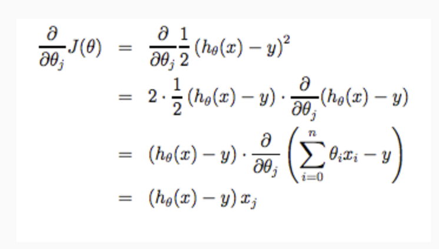Screen Shot 2018-03-03 at 09.20.14.png
The point of all this is that if we start with a guess for our hypothesis and then repeatedly apply these gradient descent equations, our hypothesis will become more and more accurate.
So, this is simply gradient descent on the original cost function J. This method looks at every example in the entire training set on every step, and is called batch gradient descent. Note that, while gradient descent can be susceptible to local minima in general, the optimization problem we have posed here for linear regression has only one global, and no other local, optima; thus gradient descent always converges (assuming the learning rate α is not too large) to the global minimum. Indeed, J is a convex quadratic function. Here is an example of gradient descent as it is run to minimize a quadratic function.
Screen Shot 2018-03-03 at 09.35.27.png
The ellipses shown above are the contours of a quadratic function. Also shown is the trajectory taken by gradient descent, which was initialized at (48,30). The x’s in the figure (joined by straight lines) mark the successive values of θ that gradient descent went through as it converged to its minimum.
Matrices and Vectors
Matrices are 2-dimensional arrays: \[
\begin{pmatrix}
a & b & c \\
d & e & f \\
g & h & i \\
j & k & l \\
\end{pmatrix}
\]
The above matrix has four rows and three columns, so it is a 4 x 3 matrix.
A vector is a matrix with one column and many rows: \[
\begin{bmatrix}
a \\
b \\
c \\
d \\
e \\
\end{bmatrix}
\]
So vectors are a subset of matrices. The above vector is a 4 x 1 matrix.
Notation and terms:
\(A_{ij}\) refers to the element in the ith row and jth column of matrix A.
A vector with 'n' rows is referred to as an 'n'-dimensional vector.
\(v_i\) refers to the element in the ith row of the vector. In general, all our vectors and matrices will be 1-indexed. Note that for some programming languages, the arrays are 0-indexed.
Matrices are usually denoted by uppercase names while vectors are lowercase.
"Scalar" means that an object is a single value, not a vector or matrix.
ℝ refers to the set of scalar real numbers.
ℝ𝕟 refers to the set of n-dimensional vectors of real numbers.
1 2 3 4 5 6 7 8 9 10 11 12 13 14 15 16 17
% The ; denotes we are going back to a new row. A = [1, 2, 3; 4, 5, 6; 7, 8, 9; 10, 11, 12]
% Initialize a vector v = [1;2;3]
% Get the dimension of the matrix A where m = rows and n = columns [m,n] = size(A)
% You could also store it this way dim_A = size(A)
% Get the dimension of the vector v dim_v = size(v)
% Now let's index into the 2nd row 3rd column of matrix A A_23 = A(2,3)
Addition and Scalar Multiplication
Addition and subtraction are element-wise, so you simply add or subtract each corresponding element: \[
\begin{equation}
\begin{bmatrix}
a & b \\
c & d \\
\end{bmatrix} + \begin{bmatrix}
w & x \\
y & z \\
\end{bmatrix} = \begin{bmatrix}
a+w & b+x \\
c+y & d+z \\
\end{bmatrix}
\end{equation}
\]
Subtracting Matrices:
\[
\begin{equation}
\begin{bmatrix}
a & b \\
c & d \\
\end{bmatrix} - \begin{bmatrix}
w & x \\
y & z \\
\end{bmatrix} = \begin{bmatrix}
a-w & b-x \\
c-y & d-z \\
\end{bmatrix}
\end{equation}
\]
To add or subtract two matrices, their dimensions must be the same.
In scalar multiplication, we simply multiply every element by the scalar value: \[
\begin{equation}
\begin{bmatrix}
a & b \\
c & d \\
\end{bmatrix} * x = \begin{bmatrix}
a*x & b*x \\
c*x & d*x \\
\end{bmatrix}
\end{equation}
\]
In scalar division, we simply divide every element by the scalar value: \[
\begin{equation}
\begin{bmatrix}
a & b \\
c & d \\
\end{bmatrix} / x = \begin{bmatrix}
a/x & b/x \\
c/x & d/x \\
\end{bmatrix}
\end{equation}
\]
Experiment below with the Octave/Matlab commands for matrix addition and scalar multiplication. Feel free to try out different commands. Try to write out your answers for each command before running the cell below.
% Initialize matrix A and B A = [1, 2, 4; 5, 3, 2] B = [1, 3, 4; 1, 1, 1]
% Initialize constant s s = 2
% See how element-wise addition works add_AB = A + B
% See how element-wise subtraction works sub_AB = A - B
% See how scalar multiplication works mult_As = A * s
% Divide A by s div_As = A / s
% What happens if we have a Matrix + scalar? add_As = A + s
Matrix-Vector Multiplication
\[
\begin{equation}
\begin{bmatrix}
a & b\\
c & d\\
e & f\\
\end{bmatrix} *\begin{bmatrix}
x \\
y \\
\end{bmatrix} = \begin{bmatrix}
a*x & b*y\\
c*x & d*y\\
e*x & f*y\\
\end{bmatrix}
\end{equation}
\]
Below is an example of a matrix-vector multiplication. Make sure you understand how the multiplication works. Feel free to try different matrix-vector multiplications.
1 2 3 4 5 6 7 8
% Initialize matrix A A = [1, 2, 3; 4, 5, 6;7, 8, 9]
% Initialize vector v v = [1; 1; 1]
% Multiply A * v Av = A * v
Matrix-Matrix Multiplication
We multiply two matrices by breaking it into several vector multiplications and concatenating the result. \[
\begin{equation}
\begin{bmatrix}
a & b\\
c & d\\
e & f\\
\end{bmatrix} *\begin{bmatrix}
w & x \\
y & z \\
\end{bmatrix} = \begin{bmatrix}
a∗w+b∗y & a∗x+b∗z \\
c∗w+d∗y & c∗x+d∗z \\
e∗w+f∗y & e∗x+f∗z \\
\end{bmatrix}
\end{equation}
\]
An m x n matrix multiplied by an n x o matrix results in an m x o matrix. In the above example, a 3 x 2 matrix times a 2 x 2 matrix resulted in a 3 x 2 matrix.
To multiply two matrices, the number of columns of the first matrix must equal the number of rows of the second matrix.
For example:
1 2 3 4 5 6 7 8 9 10
% Initialize a 3 by 2 matrix A = [1, 2; 3, 4;5, 6]
% Initialize a 2 by 1 matrix B = [1; 2]
% We expect a resulting matrix of (3 by 2)*(2 by 1) = (3 by 1) mult_AB = A*B
% Make sure you understand why we got that result
Matrix Multiplication Properties
Matrices are not commutative: A∗B≠B∗A
Matrices are associative: (A∗B)∗C=A∗(B∗C)
The identity matrix, when multiplied by any matrix of the same dimensions, results in the original matrix. It's just like multiplying numbers by 1. The identity matrix simply has 1's on the diagonal (upper left to lower right diagonal) and 0's elsewhere. \[
\begin{bmatrix}
1 & 0 & 0 \\
0 & 1 & 0 \\
0 & 0 & 1 \\
\end{bmatrix}
\]
When multiplying the identity matrix after some matrix (A∗I), the square identity matrix's dimension should match the other matrix's columns. When multiplying the identity matrix before some other matrix (I∗A), the square identity matrix's dimension should match the other matrix's rows.
% Initialize random matrices A and B A = [1,2;4,5] B = [1,1;0,2]
% Initialize a 2 by 2 identity matrix I = eye(2)
% The above notation is the same as I = [1,0;0,1]
% What happens when we multiply I*A ? IA = I*A
% How about A*I ? AI = A*I
% Compute A*B AB = A*B
% Is it equal to B*A? BA = B*A
% Note that IA = AI but AB != BA
Inverse and Transpose
\[
\begin{equation}
A = \begin{bmatrix}
a & b\\
c & d\\
e & f\\
\end{bmatrix}
\end{equation}
\]
In other words:
\[A_{ij}=A^T_{ji}\]
1 2 3 4 5 6 7 8 9 10 11
% Initialize matrix A A = [1,2,0;0,5,6;7,0,9]
% Transpose A A_trans = A'
% Take the inverse of A A_inv = inv(A)
% What is A^(-1)*A? A_invA = inv(A)*A
multivariate Linear Analytically
Multiple Features
Linear regression with multiple variables is also known as "multivariate linear regression".
We now introduce notation for equations where we can have any number of input variables.
\(x^{(i)}_j\) = value of feature j in the \(i^{th}\) training example
\(x^{(i)}\) =the input (features) of the \(i^{th}\) training example
m = the number of training examples
n = the number of features
The multivariable form of the hypothesis function accommodating these multiple features is as follows: \[h_θ(x)=θ_0+θ_1x1+θ_2x_2+θ_3x_3+\cdots+θ_nx_n\]
In order to develop intuition about this function, we can think about θ0 as the basic price of a house, θ1 as the price per square meter, θ2 as the price per floor, etc. x1 will be the number of square meters in the house, x2 the number of floors, etc.
Using the definition of matrix multiplication, our multivariable hypothesis function can be concisely represented as: \[
\begin{equation}
h_θ(x) = \left[ \begin{array}{ccc}
θ_0 & θ_1 & \cdots & θ_n
\end{array} \right] \left[ \begin{array}{ccc}
θ_0 \\ θ_1 \\ \vdots \\ θ_n
\end{array} \right] = θ^Tx
\end{equation}
\] This is a vectorization of our hypothesis function for one training example; see the lessons on vectorization to learn more.
Remark: Note that for convenience reasons in this course we assume \(x^{(i)}_0=1\) for (i∈1,…,m). This allows us to do matrix operations with theta and x. Hence making the two vectors 'θ' and \(x^{(i)}\) match each other element-wise (that is, have the same number of elements: n+1).]
Gradient Descent For Multiple Variables
The gradient descent equation itself is generally the same form; we just have to repeat it for our 'n' features:
$$ θ_j:=θ_0−α_{i=1}m(h_θ(x{(i)})−y^{(i)}) for j := 0n
$$ }
The following image compares gradient descent with one variable to gradient descent with multiple variables:
Screen Shot 2018-03-04 at 18.10.50.png
Gradient Descent in Practice I - Feature Scaling
We can speed up gradient descent by having each of our input values in roughly the same range. This is because θ will descend quickly on small ranges and slowly on large ranges, and so will oscillate inefficiently down to the optimum when the variables are very uneven.
The way to prevent this is to modify the ranges of our input variables so that they are all roughly the same. Ideally:
\[−1 ≤ x_{(i)} ≤ 1\]
or
\[−0.5 ≤ x_{(i)} ≤ 0.5\]
These aren't exact requirements; we are only trying to speed things up. The goal is to get all input variables into roughly one of these ranges, give or take a few.
Two techniques to help with this are feature scaling and mean normalization. Feature scaling involves dividing the input values by the range (i.e. the maximum value minus the minimum value) of the input variable, resulting in a new range of just 1. Mean normalization involves subtracting the average value for an input variable from the values for that input variable resulting in a new average value for the input variable of just zero. To implement both of these techniques, adjust your input values as shown in this formula:
\[x_i:=\frac{x_i−μ_i}{si}\] Where μi is the average of all the values for feature (i) and si is the range of values (max - min), or si is the standard deviation.
For example, if xi represents housing prices with a range of 100 to 2000 and a mean value of 1000, then, \(x_i:=\frac{price−1000}{1900}\).
Gradient Descent in Practice II - Learning Rate
Debugging gradient descent. Make a plot with number of iterations on the x-axis. Now plot the cost function, \(J_{(θ)}\) over the number of iterations of gradient descent. If \(J_{(θ)}\) ever increases, then you probably need to decrease α.
Automatic convergence test. Declare convergence if \(J_{(θ)}\) decreases by less than E in one iteration, where E is some small value such as 10−3. However in practice it's difficult to choose this threshold value.
Screen Shot 2018-03-04 at 18.28.02.png
It has been proven that if learning rate α is sufficiently small, then \(J_{(θ)}\) will decrease on every iteration.
Screen Shot 2018-03-04 at 18.28.12.png
To summarize:
If α is too small: slow convergence.
If α is too large: may not decrease on every iteration and thus may not converge.
Features and Polynomial Regression
We can improve our features and the form of our hypothesis function in a couple different ways.
We can combine multiple features into one. For example, we can combine \(x_1\) and \(x_2\) into a new feature x3 by taking \(x_1⋅x_2\).
Polynomial Regression
Our hypothesis function need not be linear (a straight line) if that does not fit the data well.
We can change the behavior or curve of our hypothesis function by making it a quadratic, cubic or square root function (or any other form).
For example, if our hypothesis function is \(h_θ(x)=θ_0+θ_1x_1\) then we can create additional features based on x1, to get the quadratic function \(h_θ(x)=θ_0+θ_1x_1+θ_2x^2_1\) or the cubic function \(hθ(x)=θ_0+θ_1x_1+θ_2x^2_1+θ_3x^3_1\) In the cubic version, we have created new features \(x_2\) and \(x_3\) where \(x_2=x^2_1\) and \(x_3=x^3_1\).
To make it a square root function, we could do: \(h_θ(x)=θ_0+θ_1x_1+θ_2\sqrt{x_1}\) One important thing to keep in mind is, if you choose your features this way then feature scaling becomes very important.
eg. if \(x_1\) has range 1 - 1000 then range of \(x^2_1\) becomes 1 - 1000000 and that of \(x^3_1\) becomes 1 - 1000000000
Normal Equation
Gradient descent gives one way of minimizing J. Let’s discuss a second way of doing so, this time performing the minimization explicitly and without resorting to an iterative algorithm. In the "Normal Equation" method, we will minimize J by explicitly taking its derivatives with respect to the θj ’s, and setting them to zero. This allows us to find the optimum theta without iteration. The normal equation formula is given below:
\[θ=(X^TX)^{−1}X^Ty\]
Screen Shot 2018-03-04 at 18.43.29.png
There is no need to do feature scaling with the normal equation.
The following is a comparison of gradient descent and the normal equation: |Gradient Descent|Normal Equation| |:---|:---| |Need to choose alpha| No need to choose alpha| |Needs many iterations| No need to iterate| |\(O(kn^2)\)|\(O(n^3)\) | need to calculate inverse of \(X^TX\)| |Works well when n is large|Slow if n is very large|
With the normal equation, computing the inversion has complexity \(O(n^3)\). So if we have a very large number of features, the normal equation will be slow. In practice, when n exceeds 10,000 it might be a good time to go from a normal solution to an iterative process.
Normal Equation Noninvertibility
When implementing the normal equation in octave we want to use the 'pinv' function rather than 'inv.' The 'pinv' function will give you a value of θ even if \(X^TX\) is not invertible.
If \(X^TX\) is noninvertible, the common causes might be having : - Redundant features, where two features are very closely related (i.e. they are linearly dependent) - Too many features (e.g. m ≤ n). In this case, delete some features or use "regularization" (to be explained in a later lesson).
Solutions to the above problems include deleting a feature that is linearly dependent with another or deleting one or more features when there are too many features.
Logistic Regression
Classification
To attempt classification, one method is to use linear regression and map all predictions greater than 0.5 as a 1 and all less than 0.5 as a 0. However, this method doesn't work well because classification is not actually a linear function.
The classification problem is just like the regression problem, except that the values we now want to predict take on only a small number of discrete values. For now, we will focus on the binary classification problem in which y can take on only two values, 0 and 1. (Most of what we say here will also generalize to the multiple-class case.) For instance, if we are trying to build a spam classifier for email, then \(x^{(i)}\) may be some features of a piece of email, and y may be 1 if it is a piece of spam mail, and 0 otherwise. Hence, y∈{0,1}. 0 is also called the negative class, and 1 the positive class, and they are sometimes also denoted by the symbols “-” and “+.” Given \(x^{(i)}\), the corresponding \(y^{(i)}\) is also called the label for the training example.
Hypothesis Representation
We could approach the classification problem ignoring the fact that y is discrete-valued, and use our old linear regression algorithm to try to predict y given x. However, it is easy to construct examples where this method performs very poorly. Intuitively, it also doesn’t make sense for hθ(x) to take values larger than 1 or smaller than 0 when we know that y ∈ {0, 1}. To fix this, let’s change the form for our hypotheses \(h_θ(x)\) to satisfy \(0≤h_θ(x)≤1\). This is accomplished by plugging \(θ^Tx\) into the Logistic Function.
Our new form uses the "Sigmoid Function," also called the "Logistic Function": \[
\begin{align*}
& h_θ(x)=g(θ^Tx) \\
& z=θ^Tx \\
& g(z)=\frac{1}{1+e^{−z}} \\
\end{align*}
\]
The following image shows us what the sigmoid function looks like:
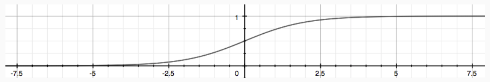Screen Shot 2018-03-04 at 21.58.35.png
The function g(z), shown here, maps any real number to the (0, 1) interval, making it useful for transforming an arbitrary-valued function into a function better suited for classification.
hθ(x) will give us the probability that our output is 1. For example, \(h_θ(x)=0.7\) gives us a probability of 70% that our output is 1. Our probability that our prediction is 0 is just the complement of our probability that it is 1 (e.g. if probability that it is 1 is 70%, then the probability that it is 0 is 30%). \[
\begin{align*}
& h_θ(x)=P(y=1|x;θ)=1−P(y=0|x;θ)\\
& P(y=0|x;θ)+P(y=1|x;θ)=1
\end{align*}
\]
Decision Boundary
In order to get our discrete 0 or 1 classification, we can translate the output of the hypothesis function as follows: \[
\begin{align*}
& hθ(x)≥0.5 \rightarrow y=1 \\
& hθ(x)<0.5 \rightarrow y=0
\end{align*}
\]
The way our logistic function g behaves is that when its input is greater than or equal to zero, its output is greater than or equal to 0.5:
Again, the input to the sigmoid function g(z) (e.g. θTX) doesn't need to be linear, and could be a function that describes a circle (e.g. \(z=θ_0+θ_1x_2^1+θ_2x_2^2\)) or any shape to fit our data.
Cost Function
We cannot use the same cost function that we use for linear regression because the Logistic Function will cause the output to be wavy, causing many local optima. In other words, it will not be a convex function.
Instead, our cost function for logistic regression looks like: \[
\begin{align*}
& J(\theta) = \frac{1}{m}\sum_{i=1}^{m}Cost(h_\theta(x^{(i)}),y^{(i)}) \\
& Cost(hθ(x),y)=−log(h_θ(x)) & \qquad if\ y = 1 \\
& Cost(hθ(x),y)=−log(1−h_θ(x)) & \qquad if\ y = 0 \\
\end{align*}
\]
When y = 1, we get the following plot for \(J(θ)\) vs \(h_θ(x)\):
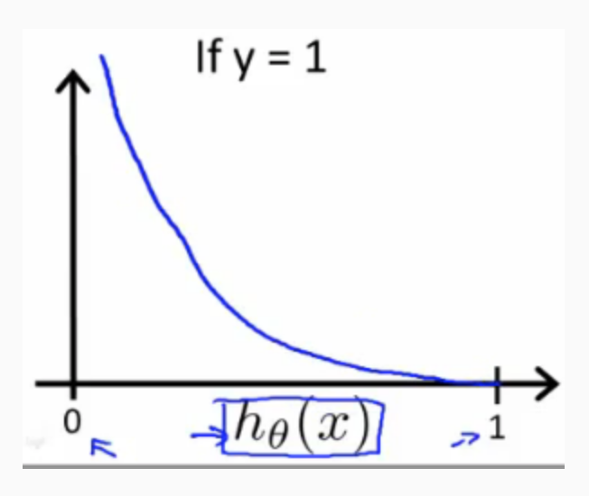Screen Shot 2018-03-05 at 16.30.57.png
Similarly, when y = 0, we get the following plot for \(J(θ)\) vs \(h_θ(x)\):
Screen Shot 2018-03-05 at 16.31.25.png
If our correct answer 'y' is 0, then the cost function will be 0 if our hypothesis function also outputs 0. If our hypothesis approaches 1, then the cost function will approach infinity.
If our correct answer 'y' is 1, then the cost function will be 0 if our hypothesis function outputs 1. If our hypothesis approaches 0, then the cost function will approach infinity.
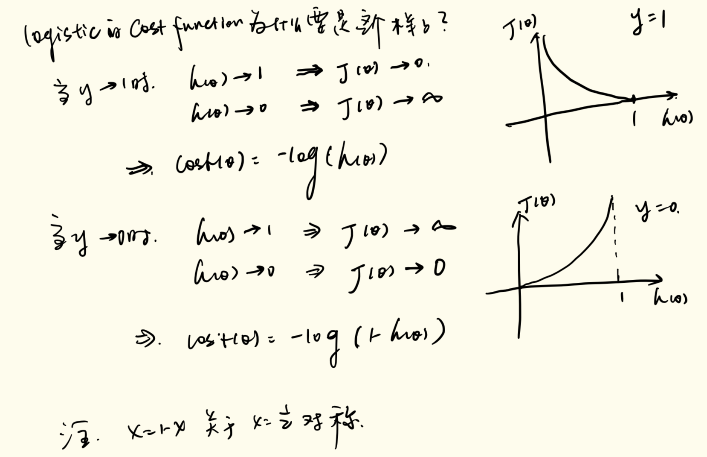Screen Shot 2018-03-05 at 16.38.30.png
Note that writing the cost function in this way guarantees that J(θ) is convex for logistic regression.
Simplified Cost Function and Gradient Descent
We can compress our cost function's two conditional cases into one case: \[Cost(h_θ(x),y)=−ylog(h_θ(x))−(1−y)log(1−h_θ(x))\]
Notice that when y is equal to 1, then the second term \((1−y)log(1−h_θ(x))\) will be zero and will not affect the result. If y is equal to 0, then the first term \(−ylog(h_θ(x))\) will be zero and will not affect the result.
We can fully write out our entire cost function as follows: \[J(θ)=−\frac{1}{m}\sum_{i=1}^{m}[y^{(i)}log(h_θ(x^{(i)}))+(1−y^{(i)})log(1−h_θ(x^{(i)}))]\]
Gradient Descent
Remember that the general form of gradient descent is: \[Repeat \left\{
\theta_i := \theta_j - \alpha\frac{\partial}{\partial\theta_j}J(\theta)\right\}
\]
We can work out the derivative part using calculus to get: \[Repeat \left\{
\theta_i := \theta_j - \frac{\alpha}{m}\sum^m_{i=1}(h_\theta(x^{(i)})-y^{(i)})x_j^{(i)}
\right\}
\]
Multiclass Classification: One-vs-all
Now we will approach the classification of data when we have more than two categories. Instead of y = {0,1} we will expand our definition so that y = {0,1...n}.
Since y = {0,1...n}, we divide our problem into n+1 (+1 because the index starts at 0) binary classification problems; in each one, we predict the probability that 'y' is a member of one of our classes. \[
\begin{align*}
&y \in \left\{0,1...n\right\} \\
&h^{(0)}_θ(x)=P(y=0|x;θ) \\
& h^{(1)}_θ(x)=P(y=1|x;θ) \\
& \cdots \\
& h^{(n)}_θ(x)=P(y=n|x;θ) \\
& prediction = \max\limits_{i}(h^{(i)}_θ(x))
\end{align*}
\]
We are basically choosing one class and then lumping all the others into a single second class. We do this repeatedly, applying binary logistic regression to each case, and then use the hypothesis that returned the highest value as our prediction.
The following image shows how one could classify 3 classes:
Screen Shot 2018-03-05 at 16.59.52.png
To summarize: Train a logistic regression classifier \(h_θ(x)\) for each class to predict the probability that y = i, To make a prediction on a new x, pick the class that maximizes \(h_θ(x)\).
Solving the problem of Overfitting
The Problem of Overfitting
Consider the problem of predicting y from \(x \in R\). The leftmost figure below shows the result of fitting a \(y = θ_0+θ_1x\) to a dataset. We see that the data doesn’t really lie on straight line, and so the fit is not very good.
Screen Shot 2018-03-05 at 17.05.11.png
Instead, if we had added an extra feature \(x_2\) , and fit \(y=θ_0+θ_1x+θ_2x_2\) , then we obtain a slightly better fit to the data (See middle figure). Naively, it might seem that the more features we add, the better. However, there is also a danger in adding too many features: The rightmost figure is the result of fitting a 5th order polynomial \(y=\sum^5_{j=0}θ_jx_j\). We see that even though the fitted curve passes through the data perfectly, we would not expect this to be a very good predictor of, say, housing prices (y) for different living areas (x). Without formally defining what these terms mean, we’ll say the figure on the left shows an instance of underfitting—in which the data clearly shows structure not captured by the model—and the figure on the right is an example of overfitting.
Underfitting, or high bias, is when the form of our hypothesis function h maps poorly to the trend of the data. It is usually caused by a function that is too simple or uses too few features.
Overfitting, or high variance, is caused by a hypothesis function that fits the available data but does not generalize well to predict new data. It is usually caused by a complicated function that creates a lot of unnecessary curves and angles unrelated to the data.
This terminology is applied to both linear and logistic regression. There are two main options to address the issue of overfitting: - Reduce the number of features: + Manually select which features to keep. + Use a model selection algorithm (studied later in the course). - Regularization + Keep all the features, but reduce the magnitude of parameters \(θ_j\). + Regularization works well when we have a lot of slightly useful features.
Cost Function
If we have overfitting from our hypothesis function, we can reduce the weight that some of the terms in our function carry by increasing their cost.
Say we wanted to make the following function more quadratic: \[θ_0+θ_1x+θ_2x_2+θ_3x_3+θ_4x_4\]
We'll want to eliminate the influence of \(θ_3x_3\) and \(θ_4x_4\) . Without actually getting rid of these features or changing the form of our hypothesis, we can instead modify our cost function: \[min_θ\frac{1}{2m}\sum^m_{i=1}(h_θ(x^{(i)})−y^{(i)})^2+1000\cdotθ^2_3+1000\cdotθ^2_4\]
We've added two extra terms at the end to inflate the cost of \(θ_3\) and \(θ_4\). Now, in order for the cost function to get close to zero, we will have to reduce the values of \(θ_3\) and \(θ_4\) to near zero. This will in turn greatly reduce the values of \(θ_3x^3\) and \(θ_4x^4\) in our hypothesis function. As a result, we see that the new hypothesis (depicted by the pink curve) looks like a quadratic function but fits the data better due to the extra small terms \(θ_3x^3\) and \(θ_4x^4\).
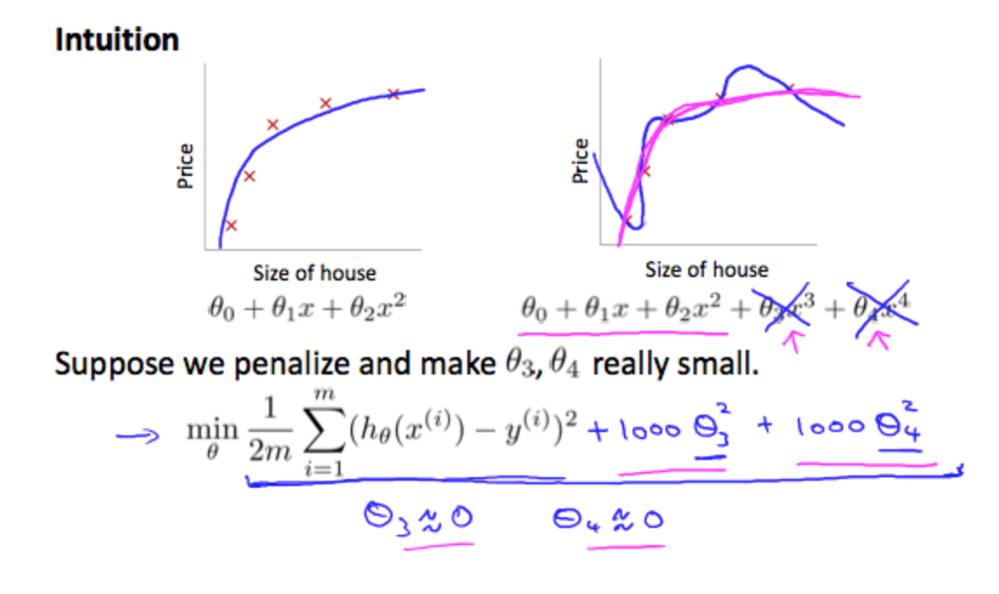Screen Shot 2018-03-05 at 17.50.15.png
We could also regularize all of our theta parameters in a single summation as: \[min_θ\frac{1}{2m}\left[\sum^m_{i=1}(h_θ(x^{(i)})−y^{(i)})^2+\lambda\sum_{j=1}^{n}\theta_j^2\right]\]
The λ, or lambda, is the regularization parameter. It determines how much the costs of our theta parameters are inflated.
Using the above cost function with the extra summation, we can smooth the output of our hypothesis function to reduce overfitting. If lambda is chosen to be too large, it may smooth out the function too much and cause underfitting. Hence, what would happen if λ=0 or is too small ?
Regularized Linear Regression
We can apply regularization to both linear regression and logistic regression. We will approach linear regression first.
Gradient Descent
We will modify our gradient descent function to separate out \(θ_0\) from the rest of the parameters because we do not want to penalize \(θ_0\).
The term \(\frac{λ}{m}θ_j\) performs our regularization. With some manipulation our update rule can also be represented as: \[θ_j:=θ_j(1−α\frac{λ}{m})−α\frac{1}{m}\sum^m_{i=1}(h_θ(x^{(i)})−y^{(i)})x^{(i)}_j\]
The first term in the above equation,\(1−α\frac{λ}{m}\) will always be less than 1. Intuitively you can see it as reducing the value of \(θ_j\) by some amount on every update. Notice that the second term is now exactly the same as it was before.
Normal Equation
Now let's approach regularization using the alternate method of the non-iterative normal equation.
To add in regularization, the equation is the same as our original, except that we add another term inside the parentheses: \[
\begin{align*}
& \theta = \left( X^TX + \lambda \cdot L\right)^{(-1)}X^Ty \\
& where \ L =
\begin{bmatrix}
0 & \\
& 1 \\
& & 1 \\
& & & \ddots \\
& & & & 1 \\
\end{bmatrix}
\end{align*}
\]
L is a matrix with 0 at the top left and 1's down the diagonal, with 0's everywhere else. It should have dimension (n+1)×(n+1). Intuitively, this is the identity matrix (though we are not including \(x_0\)), multiplied with a single real number .
Recall that if m < n, then \(X^TX\) is non-invertible. However, when we add the term \(\lambda \cdot l\), then \(X^TX + \lambda⋅L\) becomes invertible.
Regularized Logistic Regression
We can regularize logistic regression in a similar way that we regularize linear regression. As a result, we can avoid overfitting. The following image shows how the regularized function, displayed by the pink line, is less likely to overfit than the non-regularized function represented by the blue line:
Screen Shot 2018-03-05 at 20.01.22.png
Cost Function
Recall that our cost function for logistic regression was: \[J(θ)=−\frac{1}{m}\sum_{i=1}^{m}[y^{(i)}log(h_θ(x^{(i)}))+(1−y^{(i)})log(1−h_θ(x^{(i)}))]\]
We can regularize this equation by adding a term to the end: \[J(θ)=−\frac{1}{m}\sum_{i=1}^{m}[y^{(i)}log(h_θ(x^{(i)}))+(1−y^{(i)})log(1−h_θ(x^{(i)}))] + \frac{\lambda}{2m}\sum_{j=1}^{n}\theta_j^2\]
he second sum,\(\sum^n_{j=1}θ^2_j\) means to explicitly exclude the bias term, \(θ_0\). I.e. the θ vector is indexed from 0 to n (holding n+1 values, \(θ_0\) through \(θ_n\)), and this sum explicitly skips \(θ_0\), by running from 1 to n, skipping 0. Thus, when computing the equation, we should continuously update the two following equations:
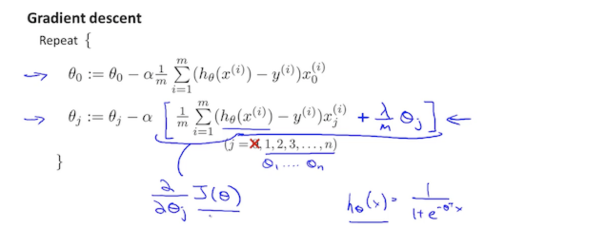Screen Shot 2018-03-05 at 22.47.16.png
Neural Networks
Model Representation
Model Representation I
Let's examine how we will represent a hypothesis function using neural networks. At a very simple level, neurons are basically computational units that take inputs (dendrites) as electrical inputs (called "spikes") that are channeled to outputs (axons). In our model, our dendrites are like the input features \(x_1 \dots x_n\), and the output is the result of our hypothesis function. In this model our \(x_0\) input node is sometimes called the "bias unit." It is always equal to 1. In neural networks, we use the same logistic function as in classification, \(\frac{1}{1+e^{−θ^Tx}}\), yet we sometimes call it a sigmoid (logistic) activation function. In this situation, our "theta" parameters are sometimes called "weights".
The values for each of the "activation" nodes is obtained as follows: \[
\begin{align*}
& a^{(2)}_1=g(Θ^{(1)}_{10}x_0+Θ^{(1)}_{11}x_1+Θ^{(1)}_{12}x_2+Θ^{(1)}_{13}x_3) \\
& a^{(2)}_2=g(Θ^{(1)}_{20}x_0+Θ^{(1)}_{21}x_1+Θ^{(1)}_{22}x_2+Θ^{(1)}_{23}x_3) \\
& a^{(2)}_3=g(Θ^{(1)}_{30}x_0+Θ^{(1)}_{31}x_1+Θ^{(1)}_{32}x_2+Θ^{(1)}_{33}x_3) \\
& h_Θ(x)=a^{(3)}_1=g(Θ^{(2)}_{10}a^{(2)}_0+Θ^{(2)}_{11}a^{(2)}_1+Θ^{(2)}_{12}a^{(2)}_2+Θ^{(2)}_{13}a^{(2)}_3)
\end{align*}
\]
This is saying that we compute our activation nodes by using a 3×4 matrix of parameters. We apply each row of the parameters to our inputs to obtain the value for one activation node. Our hypothesis output is the logistic function applied to the sum of the values of our activation nodes, which have been multiplied by yet another parameter matrix \(Θ^{(2)}\) containing the weights for our second layer of nodes.
Each layer gets its own matrix of weights, \(Θ^{(j)}\).
The dimensions of these matrices of weights is determined as follows:
If network has \(s_j\) units in layer j and \(s_{j+1}\) units in layer j+1, then \(Θ^{(j)}\) will be of dimension \(s_{j+1}×(s_j+1)\).
The +1 comes from the addition in \(Θ^{(j)}\) of the "bias nodes," \(x_0\) and \(Θ^{(j)}_0\). In other words the output nodes will not include the bias nodes while the inputs will. The following image summarizes our model representation:
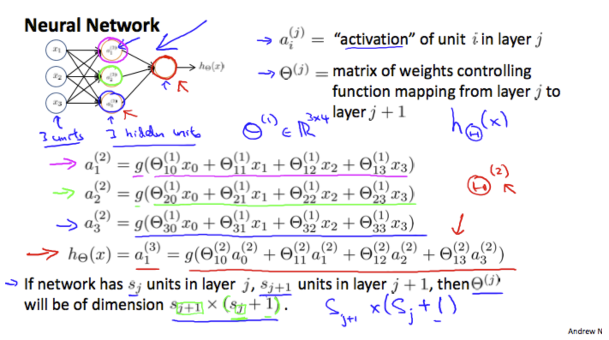Screen Shot 2018-03-05 at 23.27.21.png
Example: If layer 1 has 2 input nodes and layer 2 has 4 activation nodes. Dimension of \(Θ^{(1)}\) is going to be 4×3 where \(s_j=2\) and \(s_{j+1}=4\), so \(s_{j+1}×(s_j+1)=4×3\).
Examples and Intuitions I
A simple example of applying neural networks is by predicting x1 AND x2, which is the logical 'and' operator and is only true if both x1 and x2 are 1.
The graph of our functions will look like: \[
\begin{equation}
\begin{bmatrix}
x_0\\
x_1\\
x_2\\
x_3\\
\end{bmatrix} \rightarrow\begin{bmatrix}
g(z^{(2)})\\
\end{bmatrix}\rightarrow h_\theta(x)
\end{equation}
\]
Remember that x0 is our bias variable and is always 1.
Let's set our first theta matrix as: \[\theta^{(1)} = \left[ -30 \quad 20 \quad 20 \right]\]
This will cause the output of our hypothesis to only be positive if both \(x_1\) and \(x_2\) are 1. In other words: \[
\begin{align*}
& hΘ(x)=g(−30+20x1+20x2)\\
& x1=0 \ and \ x2=0 \ then \ g(−30) \approx 0 \\
& x1=0 \ and \ x2=1 \ then \ g(−10) \approx 0 \\
& x1=1 \ and \ x2=0 \ then \ g(−10) \approx 0 \\
& x1=1 \ and \ x2=1 \ then \ g(10) \approx 1 \\
\end{align*}
\]
So we have constructed one of the fundamental operations in computers by using a small neural network rather than using an actual AND gate. Neural networks can also be used to simulate all the other logical gates. The following is an example of the logical operator 'OR', meaning either \(x_1\) is true or \(x_2\) is true, or both:
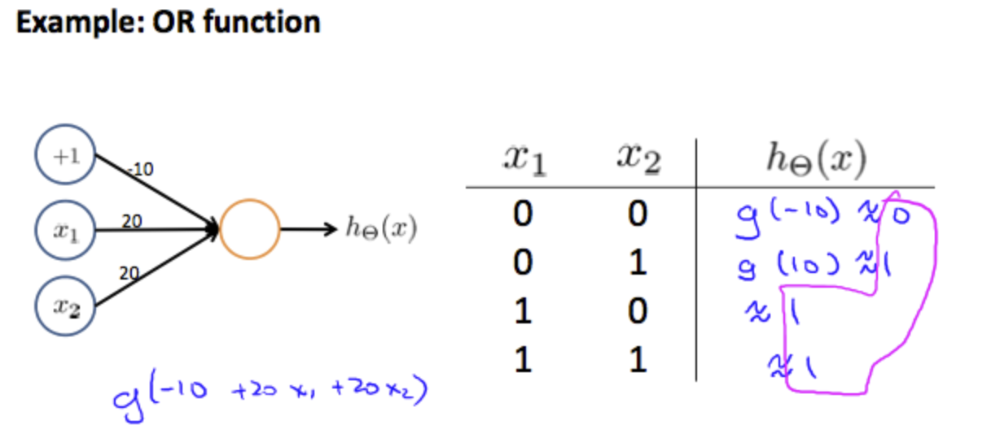Screen Shot 2018-03-06 at 00.16.18.png
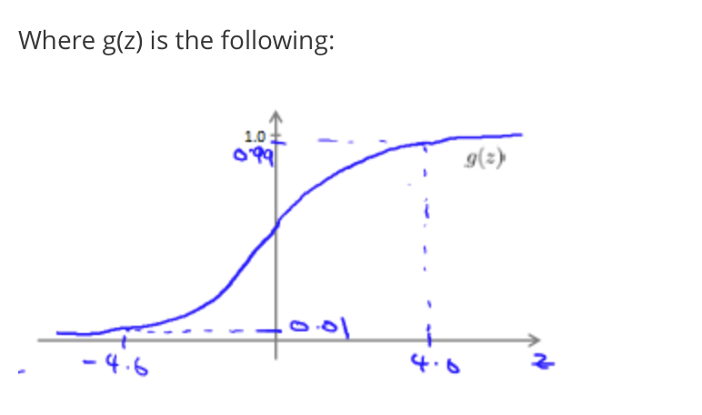Screen Shot 2018-03-06 at 00.16.24.png
For the transition between the second and third layer, we'll use a \(Θ^(2)\) matrix that uses the value for OR: \[
\begin{equation}
\theta^{(1)} = \begin{bmatrix}
& -10 & 20 & 20\\
\end{bmatrix}
\end{equation}
\]
Let's write out the values for all our nodes: \[
\begin{align*}
& a^{(2)}=g(Θ^{(1)}\cdot x) \\
& a^{(3)}=g(Θ(2)\cdot a^{(2)}) \\
& h_Θ^{(x)}=a^{(3)}
\end{align*}
\]
And there we have the XNOR operator using a hidden layer with two nodes! The following summarizes the above algorithm:
Multiclass Classification
To classify data into multiple classes, we let our hypothesis function return a vector of values. Say we wanted to classify our data into one of four categories. We will use the following example to see how this classification is done. This algorithm takes as input an image and classifies it accordingly:
Screen Shot 2018-03-06 at 00.36.26.png
We can define our set of resulting classes as y: 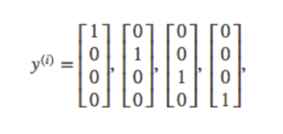
Each \(y^{(i)}\) represents a different image corresponding to either a car, pedestrian, truck, or motorcycle. The inner layers, each provide us with some new information which leads to our final hypothesis function. The setup looks like:
Screen Shot 2018-03-06 at 00.36.39.png
Our resulting hypothesis for one set of inputs may look like:
In which case our resulting class is the third one down, or \(h_Θ(x)_3\), which represents the motorcycle.
Cost Function
Let's first define a few variables that we will need to use: - L = total number of layers in the network - \(s_l\) = number of units (not counting bias unit) in layer l - K = number of output units/classes
Recall that in neural networks, we may have many output nodes. We denote \(h_Θ(x)_k\) as being a hypothesis that results in the kth output. Our cost function for neural networks is going to be a generalization of the one we used for logistic regression. Recall that the cost function for regularized logistic regression was: \[J(θ)=−\frac{1}{m}\sum_{i=1}^{m}[y^{(i)}log(h_θ(x^{(i)}))+(1−y^{(i)})log(1−h_θ(x^{(i)}))] + \frac{\lambda}{2m}\sum_{j=1}^{n}\theta_j^2\] For neural networks, it is going to be slightly more complicated: \[J(θ)=−\frac{1}{m}\sum_{i=1}^{m}\sum_{k=1}^{k}\left[y^{(i)}log(h_θ(x^{(i)}))+(1−y^{(i)})log(1−h_θ(x^{(i)}))\right] + \frac{\lambda}{2m}\sum_{j=1}^{L-1}\sum_{i=1}^{s_j}\sum_{j=1}^{s_j+1}\left(\Theta_{j,i}^{(l)} \right)\]
We have added a few nested summations to account for our multiple output nodes. In the first part of the equation, before the square brackets, we have an additional nested summation that loops through the number of output nodes.
In the regularization part, after the square brackets, we must account for multiple theta matrices. The number of columns in our current theta matrix is equal to the number of nodes in our current layer (including the bias unit). The number of rows in our current theta matrix is equal to the number of nodes in the next layer (excluding the bias unit). As before with logistic regression, we square every term.
Note:
the double sum simply adds up the logistic regression costs calculated for each cell in the output layer
the triple sum simply adds up the squares of all the individual Θs in the entire network.
the i in the triple sum does not refer to training example i
Once we have done some trouble shooting for errors in our predictions by:
Getting more training examples
Trying smaller sets of features
Trying additional features
Trying polynomial features
Increasing or decreasing λ
We can move on to evaluate our new hypothesis.
A hypothesis may have a low error for the training examples but still be inaccurate (because of overfitting). Thus, to evaluate a hypothesis, given a dataset of training examples, we can split up the data into two sets: a training set and a test set. Typically, the training set consists of 70% of your data and the test set is the remaining 30%.
The new procedure using these two sets is then:
Learn Θ and minimize \(J_{train}(Θ)\) using the training set Compute the test set error \(J_{test}(Θ)\)
The test set error
For linear regression: \[J_{test}(Θ)=\frac{1}{2m_{test}}\sum^{m_{test}}_{i=1}(h_Θ(x^{(i)}_{test})−y^{(i)}_{test})^2\] For classification ~ Misclassification error (aka 0/1 misclassification error): \[
\begin{equation}
err(h_Θ(x),y)= \left\{
\begin{aligned}
\overset{.} 1 & \quad if \ h_Θ(x)≥0.5 \ and \ y=0 \ or \ h_Θ(x)<0.5 \ and \ y=1 \\
0 & \quad otherwise \end{aligned}
\right.
\end{equation}
\]
This gives us a binary 0 or 1 error result based on a misclassification. The average test error for the test set is:
This gives us the proportion of the test data that was misclassified.
Model Selection and Train/Validation/Test Sets
Just because a learning algorithm fits a training set well, that does not mean it is a good hypothesis. It could over fit and as a result your predictions on the test set would be poor. The error of your hypothesis as measured on the data set with which you trained the parameters will be lower than the error on any other data set.
Given many models with different polynomial degrees, we can use a systematic approach to identify the 'best' function. In order to choose the model of your hypothesis, you can test each degree of polynomial and look at the error result.
One way to break down our dataset into the three sets is: - Training set: 60% - Cross validation set: 20% - Test set: 20%
We can now calculate three separate error values for the three different sets using the following method:
Optimize the parameters in Θ using the training set for each polynomial degree.
Find the polynomial degree d with the least error using the cross validation set.
Estimate the generalization error using the test set with \(J_{test}(Θ^{(d)})\), (d = theta from polynomial with lower error);
This way, the degree of the polynomial d has not been trained using the test set.
Diagnosing Bias vs. Variance
In this section we examine the relationship between the degree of the polynomial d and the underfitting or overfitting of our hypothesis.
We need to distinguish whether bias or variance is the problem contributing to bad predictions.
High bias is underfitting and high variance is overfitting. Ideally, we need to find a golden mean between these two.
The training error will tend to decrease as we increase the degree d of the polynomial.
At the same time, the cross validation error will tend to decrease as we increase d up to a point, and then it will increase as d is increased, forming a convex curve.
High bias (underfitting): both \(J_{train}(Θ)\) and \(J_{CV}(Θ)\) will be high. Also, \(J_{CV}(Θ) \approx J_{train}(Θ)\).
High variance (overfitting): \(J_{train}(Θ)\) will be low and \(J_{CV}(Θ)\) will be much greater than \(J_{train}(Θ)\).
The is summarized in the figure below: 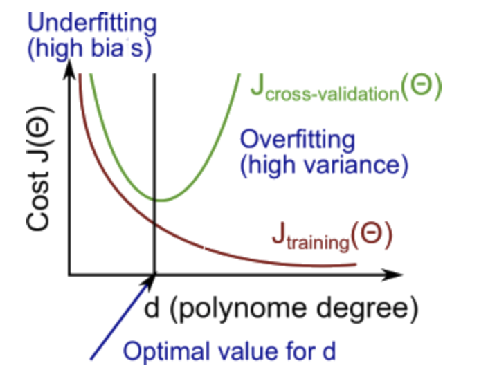
Regularization and Bias/Variance
In the figure above, we see that as λ increases, our fit becomes more rigid. On the other hand, as λ approaches 0, we tend to over overfit the data. So how do we choose our parameter λ to get it 'just right' ? In order to choose the model and the regularization term λ, we need to:
Create a list of lambdas (i.e. \(λ \in \left\{0,0.01,0.02,0.04,0.08,0.16,0.32,0.64,1.28,2.56,5.12,10.24\right\}\));
Create a set of models with different degrees or any other variants.
Iterate through the λs and for each λ go through all the models to learn some Θ.
Compute the cross validation error using the learned Θ (computed with λ) on the \(J_{CV}(Θ)\)without regularization or λ = 0.
Select the best combo that produces the lowest error on the cross validation set.
Using the best combo Θ and λ, apply it on \(J_{test}(Θ)\) to see if it has a good generalization of the problem.
Learning Curves
Training an algorithm on a very few number of data points (such as 1, 2 or 3) will easily have 0 errors because we can always find a quadratic curve that touches exactly those number of points. Hence: - As the training set gets larger, the error for a quadratic function increases. - The error value will plateau out after a certain m, or training set size.
Experiencing high bias:
Low training set size: causes \(J_{train}(Θ)\) to be low and \(J_{CV}(Θ)\) to be high.
Large training set size: causes both \(J_{train}(Θ)\) and \(J_CV(Θ)\) to be high with \(J_{train}(Θ) \approx J_{CV}(Θ)\).
If a learning algorithm is suffering from high bias, getting more training data will not (by itself) help much.
Screen Shot 2018-03-07 at 02.48.32.png
Experiencing high variance:
Low training set size: causes \(J_{train}(Θ)\) to be low and \(J_{CV}(Θ)\) to be high.
Large training set size: \(J_{train}(Θ)\) increases with training set size and \(J_{CV}(Θ)\) continues to decrease without leveling off. Also, \(J_{train}(Θ) < J_{CV}(Θ)\) but the difference between them remains significant.
If a learning algorithm is suffering from high variance, getting more training data is likely to help. 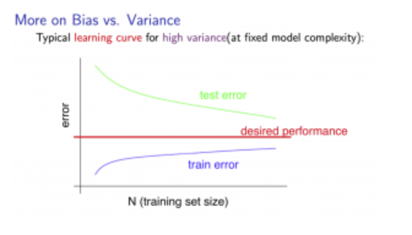
Deciding What to Do Next Revisited
Our decision process can be broken down as follows:
Getting more training examples: Fixes high variance
Trying smaller sets of features: Fixes high variance
Adding features: Fixes high bias
Adding polynomial features: Fixes high bias
Decreasing λ: Fixes high bias
Increasing λ: Fixes high variance.
Diagnosing Neural Networks
A neural network with fewer parameters is prone to underfitting. It is also computationally cheaper.
A large neural network with more parameters is prone to overfitting. It is also computationally expensive. In this case you can use regularization (increase λ) to address the overfitting.
Using a single hidden layer is a good starting default. You can train your neural network on a number of hidden layers using your cross validation set. You can then select the one that performs best.
Support Vector Machines
from logistic to SVM
Screen Shot 2018-03-07 at 11.30.56.png
###Cost Function
recall the cost function of logistic Regression: \[\min_{\theta}−\frac{1}{m}\sum_{i=1}^{m}[y^{(i)}log(h_θ(x^{(i)}))+(1−y^{(i)})log(1−h_θ(x^{(i)}))] + \frac{\lambda}{2m}\sum_{j=1}^{n}\theta_j^2\]
We replace some terms with new terms and delete some terms which will not influence the results:


 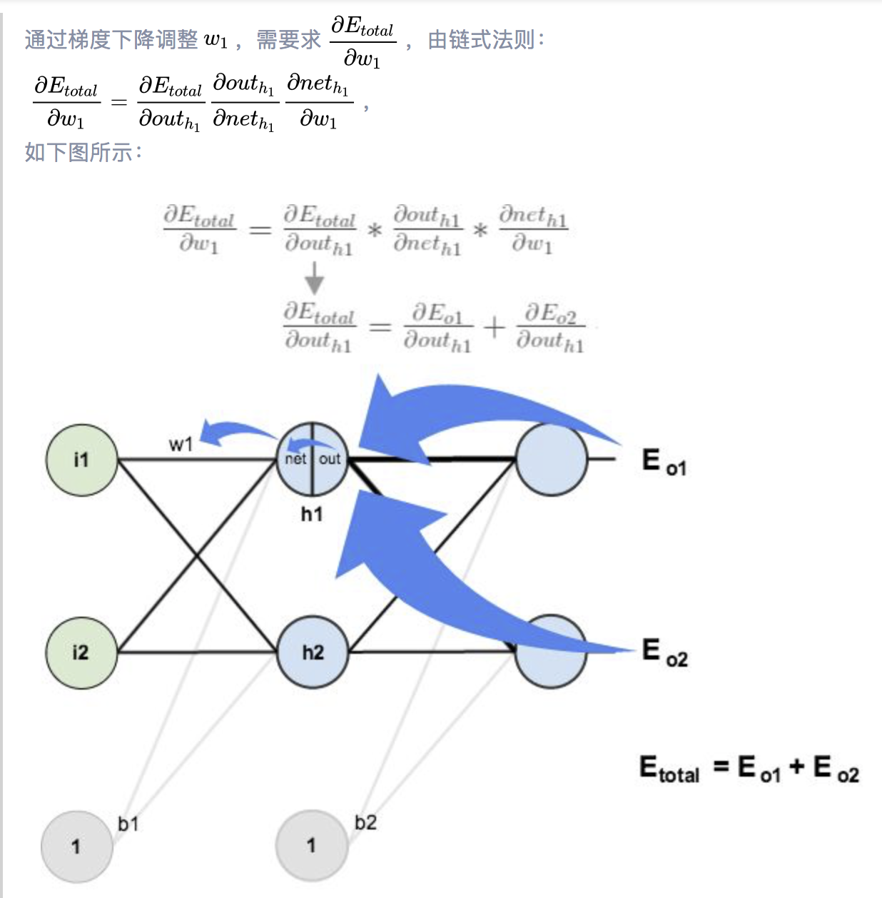
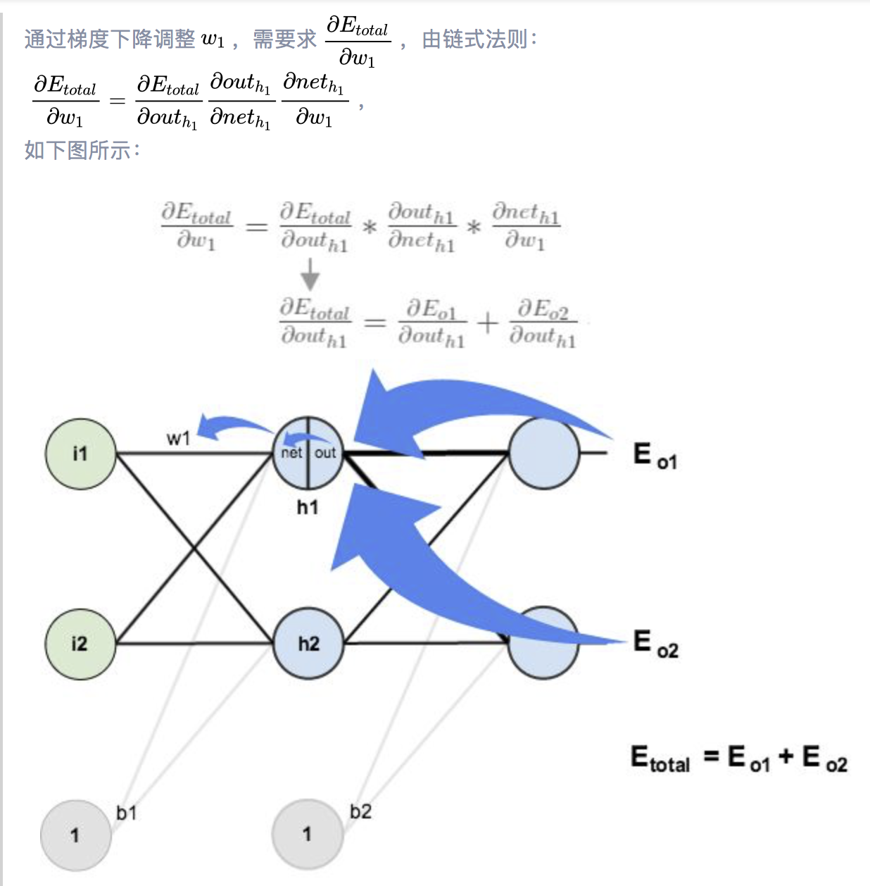 


 In the figure above, we see that as λ increases, our fit becomes more rigid. On the other hand, as λ approaches 0, we tend to over overfit the data. So how do we choose our parameter λ to get it 'just right' ? In order to choose the model and the regularization term λ, we need to:
In the figure above, we see that as λ increases, our fit becomes more rigid. On the other hand, as λ approaches 0, we tend to over overfit the data. So how do we choose our parameter λ to get it 'just right' ? In order to choose the model and the regularization term λ, we need to:


 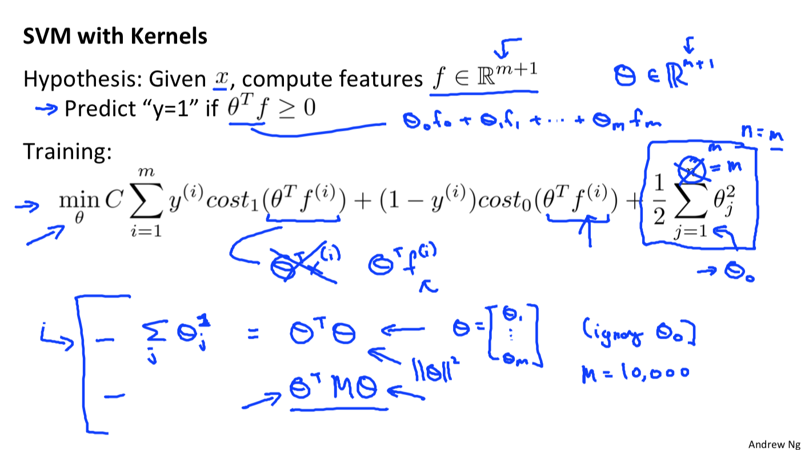
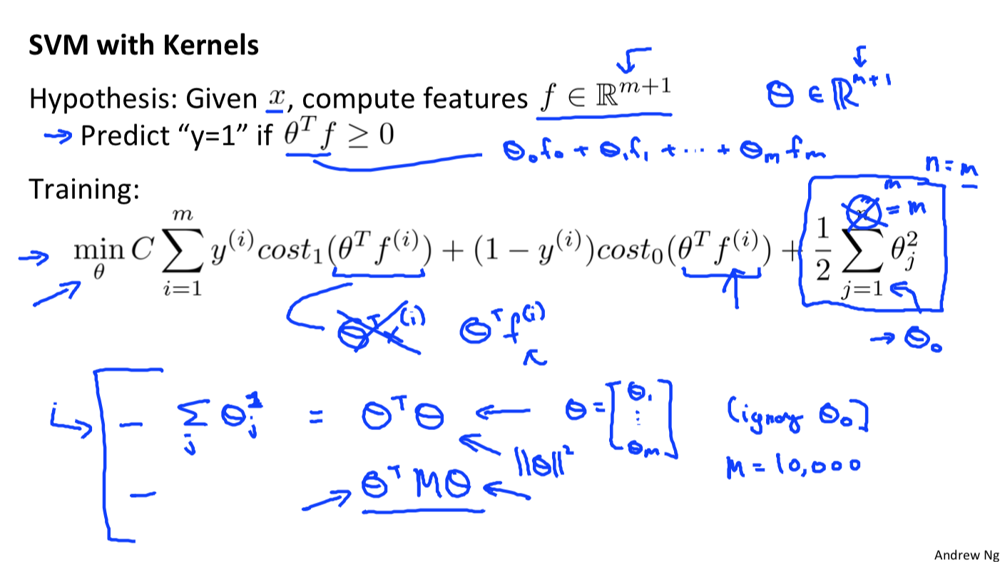 


 先对参数进行说明：
先对参数进行说明：
 J(c,u)实际上是一个单调递减的函数，且是一个非凸函数，只要我们能找到拐点，那我们就已经达到了收敛，又称这种方法为elbow function。偶尔也有可能陷入局部最优情况，或出现震荡情况，这样一定是有问题了。
J(c,u)实际上是一个单调递减的函数，且是一个非凸函数，只要我们能找到拐点，那我们就已经达到了收敛，又称这种方法为elbow function。偶尔也有可能陷入局部最优情况，或出现震荡情况，这样一定是有问题了。

 这里只有x和y，求解得 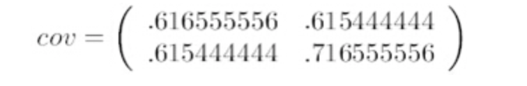
这里只有x和y，求解得 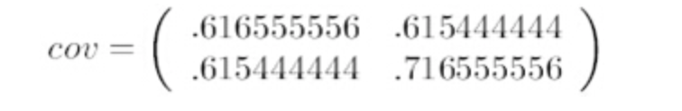 上面是两个特征值，下面是对应的特征向量，特征值0.0490833989对应特征向量为，这里的特征向量都归一化为单位向量。
上面是两个特征值，下面是对应的特征向量，特征值0.0490833989对应特征向量为，这里的特征向量都归一化为单位向量。
 正号表示预处理后的样本点，斜着的两条线就分别是正交的特征向量（由于协方差矩阵是对称的，因此其特征向量正交），最后一步的矩阵乘法就是将原始样本点分别往特征向量对应的轴上做投影。
正号表示预处理后的样本点，斜着的两条线就分别是正交的特征向量（由于协方差矩阵是对称的，因此其特征向量正交），最后一步的矩阵乘法就是将原始样本点分别往特征向量对应的轴上做投影。


 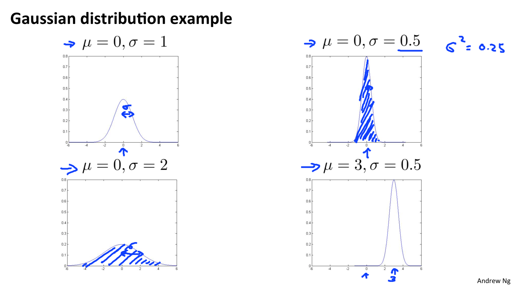
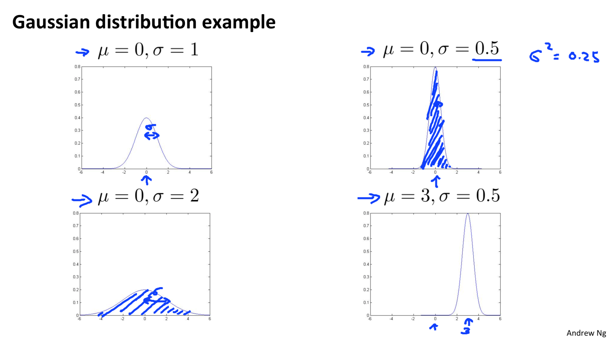


 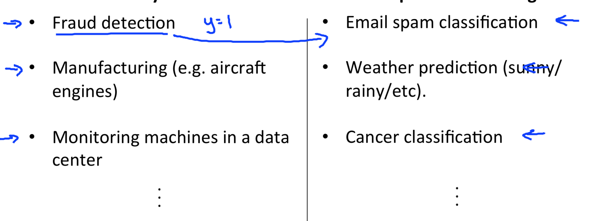
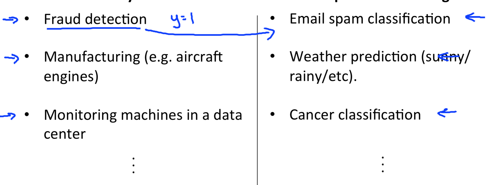
 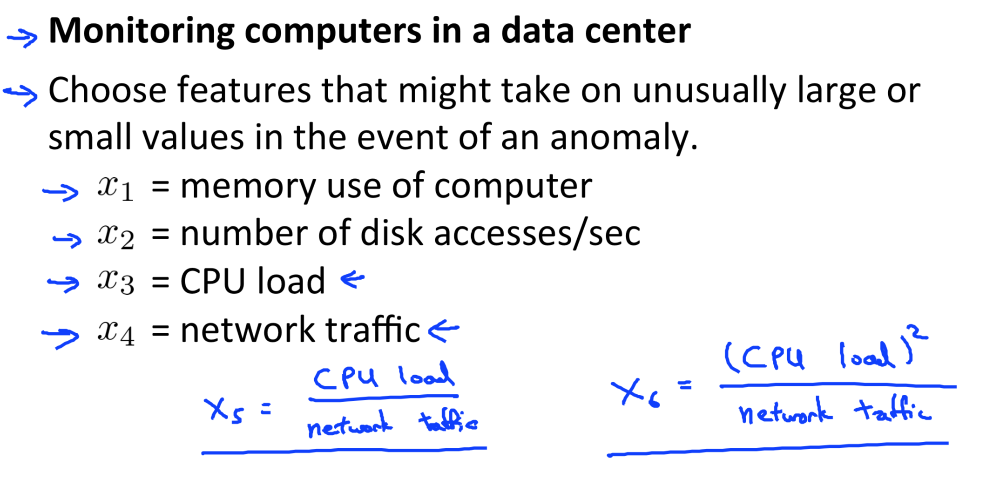
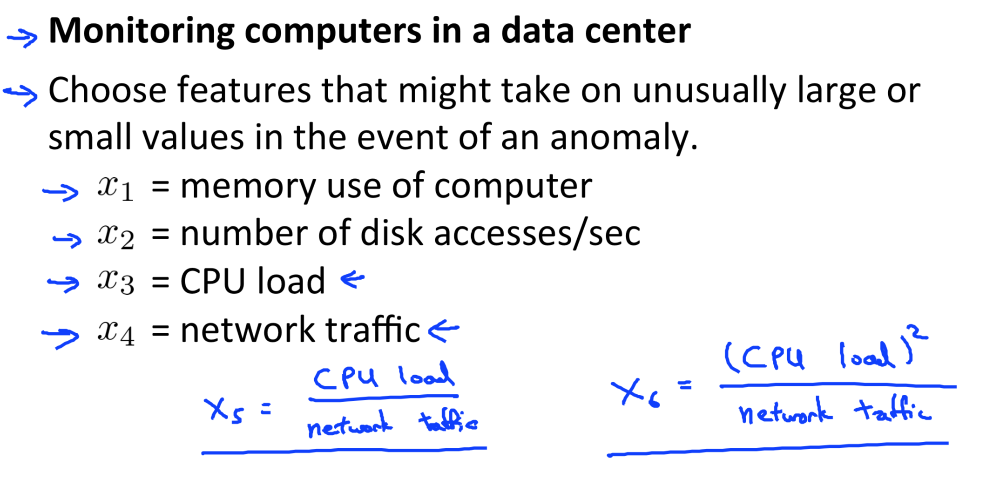


 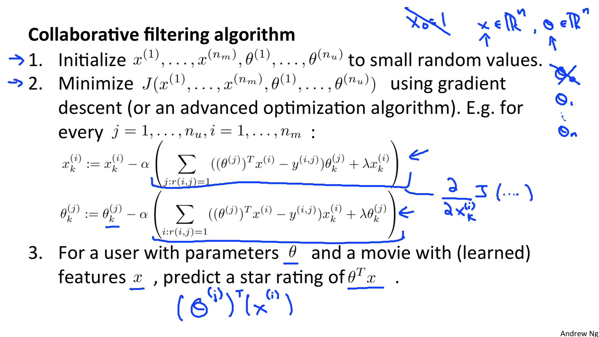 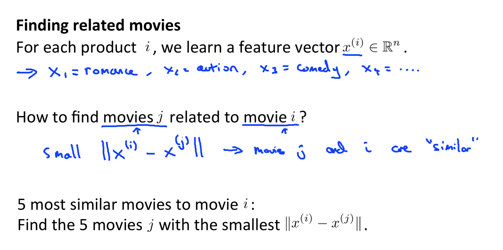
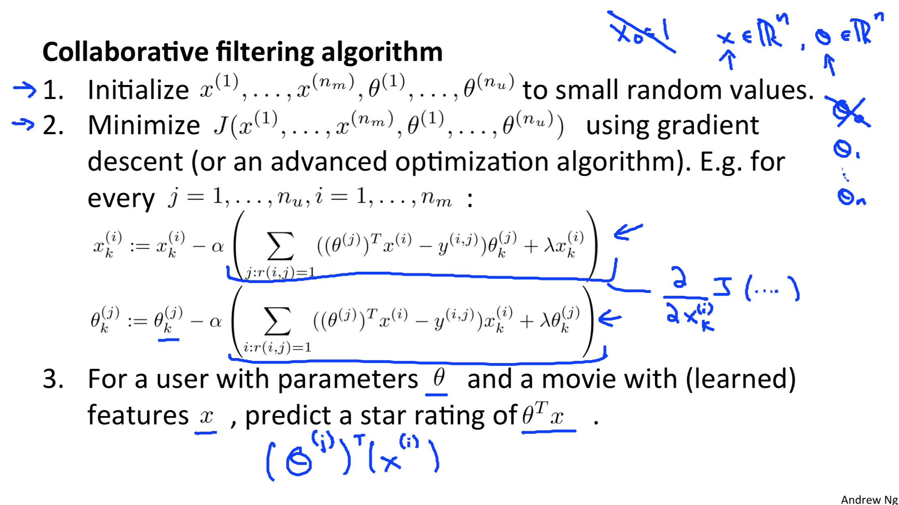 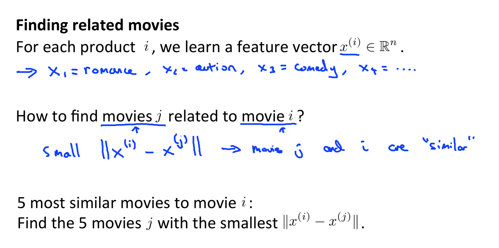
 o ### Mini-batch gradient descent 每次利用 n 个样本来计算梯度
o ### Mini-batch gradient descent 每次利用 n 个样本来计算梯度